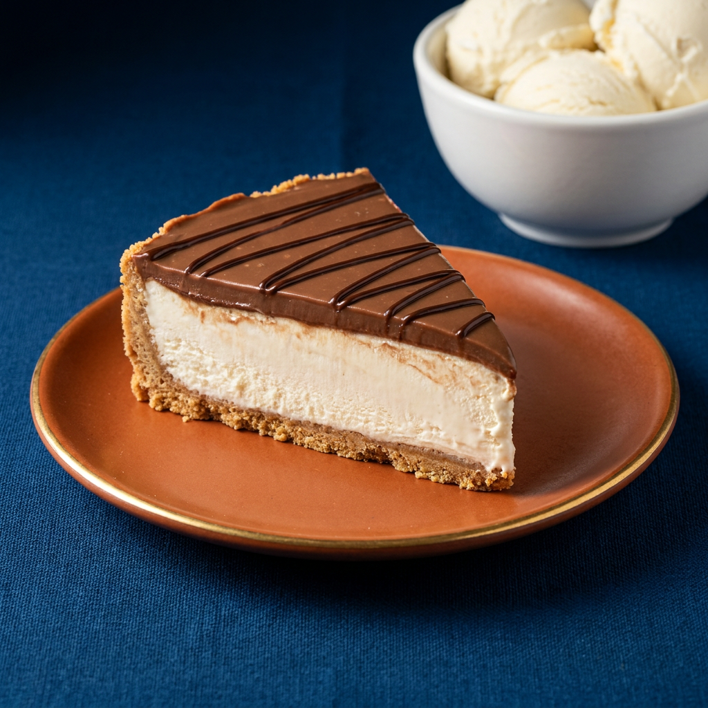

⭐ Favorita da casaTorta Holandesa com Sorvete
Ingredientes
- Massa: 1 pacote de bolacha de leite
- 100 g de manteiga em temperatura ambiente
- Recheio: 1 pote de sorvete Q'Delícia (usamos o sabor creme)
- ½ creme de leite
- 3 colheres de açúcar
- Cobertura: ½ creme de leite
- 150 g de chocolate picado
Modo de preparo
- No liquidificador, bata as bolachas até virar uma farofa. Junte a manteiga derretida e incorpore. Forre a forma (fundo e laterais) apertando a massa para ficar firme. Reserve.
- Na batedeira, bata o creme de leite com o açúcar e incorpore ao sorvete (use em torno de meio pote).
- Coloque o recheio na forma, sobre a massa, cubra com papel-alumínio e leve ao freezer por 12 horas.
- Derreta o chocolate picado e misture o restante do creme de leite até incorporar bem. Espalhe por cima da torta.
Dica Q'Delícia: finalize com fios de chocolate derretido por cima da cobertura para o visual clássico da torta holandesa.